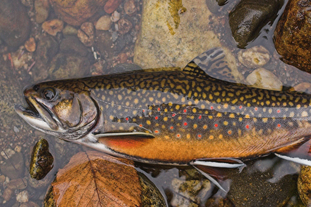
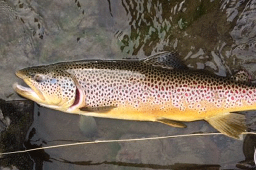
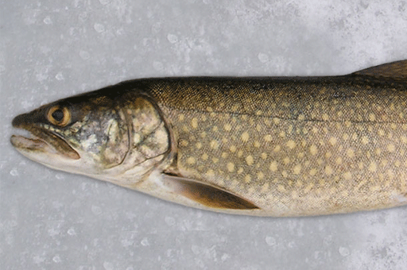
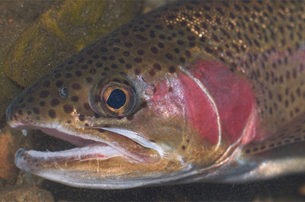
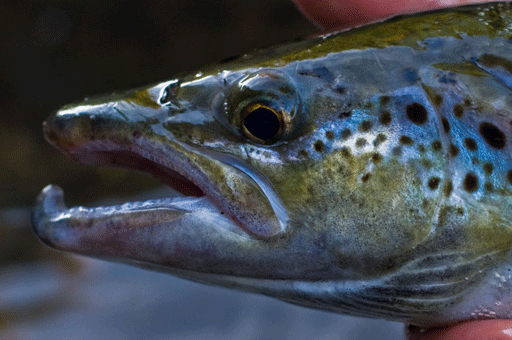

Fish
Brook Trout (Salvelinus fontinalis)
The Brook Trout, or Salvelinus fontinalis, is the smallest of the native salmonids of Vermont, and is also called the "squaretail."
The most distinguishing feature of the brook trout (or wild "brookie") is its adipose fin, or small fin on the back located directly in front of the tail. Brook trout have an orange bellies, a dark olive-green back, with worm-like markings. Red spots with bluish halos highlight the body. The lower fins are pink or red with their edges lined in white.
Brown Trout (Salmo trutta)
The Brown Trout, or Salmo trutta, is one of the trout species in Vermont that is not native, introduced in the late 1800s.
Brown Trout have a preferance for deeper, slower and more fertile downstream river areas, and are commonly found in rivers and streams. They are olive green to brown in color on the top, a golden yellow on the sides, off-white along the belly, and covered with black spots all over.
Lake Trout (Salvelinus namaycush)
The Lake Trout, or Salvelinus namaycush, are dwellers of deep, cold lakes, and have a hard time tolerating any water above 60 degrees fahrenheit.
Lake Trout spawn over rocky shoals and along wave-swept shorelines during the fall. These fish possess a deeply forked caudal fin, and a gray-green body with lighter undersides. Yellow or Cream colored spots are found all over, and the lower fins tend to be orange-red with white.
Rainbow Trout (Oncorhynchus mykiss)
The Rainbow Trout, or Oncorhynchus mykiss, were introduced to Vermont in the late 1800s.
Rainbow Trout will live in moderate-to-high gradient streams and rivers, as well as cold lakes. They are very sensitive to water pH levels and do not do well in acidic conditions. They inhabit moderate-to-high gradient, cold-water streams that have a pH range of 5.5 to 9, and a temperature between 45 and 64 degrees fahrenheit.
Landlocked Salmon (Salmo salar)
The Landlocked Salmon, or Salmo salar, is one of the most prized fish in the Northeast.
First found in Maine and South-East Canada, the Landlocked Salmon is native to Lake Champlain, but has since been distributed throughout North America and Europe. There are no physical differences between the Landlocked Salmon and Atlantic Salmon. These fish tolerate a maximum water temperature of 70-75 degrees fahrenheit, with a pH of no more than 7, and no less than 6.